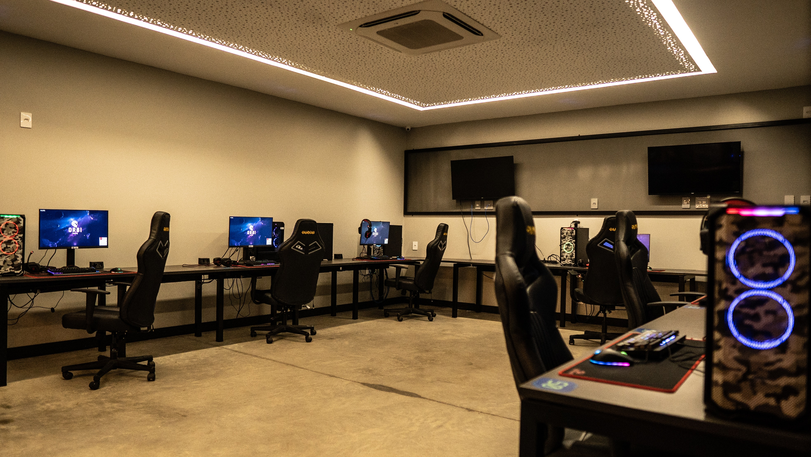
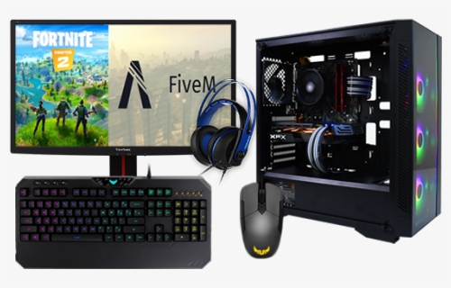

Um PC gamer pode ser uma melhor opção do que um videogame na hora de comprar um dispositivo para jogos. Isso porque, além de desempenho de ponta, a máquina oferece maior diversidade de jogos e com preços mais acessíveis, variedade de controle e modo gratuito.
Por outro lado, a compra de um PC gamer é um investimento pesado, que, muitas vezes, supera o preço de um videogame da geração atual. No entanto, as vantagens desse tipo de máquina acabam compensando o preço mais alto.
mas caso você queira ver uma foto de um pc gamer antes de ver o preço, tera uma foto logo abaixo.
caso você queira olhar alguns preços de pcs ja montado clique aqui
Mas se por a caso você seja igual eu e não goste de comprar o pc ja montado,logo abaixo tera uma imagem clicavel aonde ela levara a cada peça do computador.
